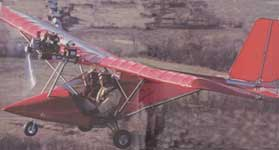
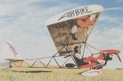
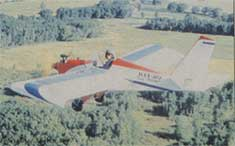
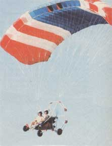
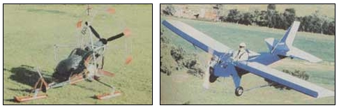
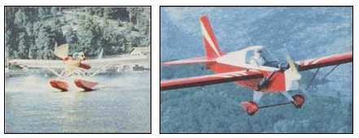
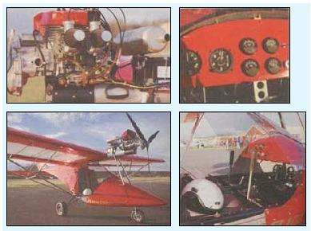
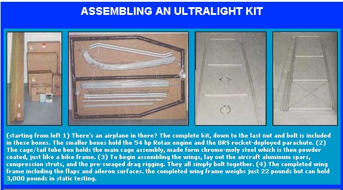
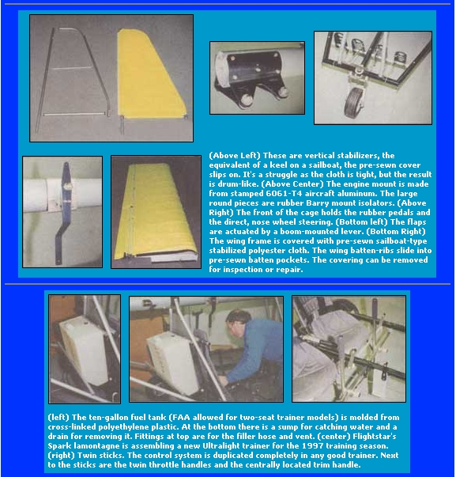

COUNTRY SKILLS
Ultralight aircraft are cheap, easy to fly and assemble.. and you don't have to be a pilot to own one.
It starts with a gentle rumbling in the seat of your pants, and a sudden burst of wind and speed that causes the skin on the back of your neck to tighten and your hand to firm on the stick. Tires pitch and shake for a moment over clumps arid irregularities in the grass strip and any local dogs come bounding. The small engine mounted just ahead of the pilot's seat winds up and sends vibrations through the cab as the ground, barely a foot from your shoes, gradually and then suddenly fades away. The same engine that appeared so small on .the ground, pulls you into the sky with amazing certainty. Nerves quickly ease, replaced by a spreading grin ...whether it's your first flight or fiftieth y.Almost impossibly, it seems, local cornfields and pumpkin patches that you've only seen from the stunted view of the highways suddenly become a mosaic of colors and details. Once you get to just over a thousand feet from the fields, the kid in you takes over and you throw the aircraft into sorne tight turns and steep des cents over the pine trees.
Ultralight aircraft just shouldn't exist in a country in which you are no longer permitted to go without a seatbelt, in which insurance costs for an average car regularly exceed $2,000 a year. The freedom to fly an airplane that you build yourself, maintain yourself, and take absolute personal responsibility for is so redolent of the visions we had for this country in the first place...that it is simply too good to be true.
There is arguably no industry in the world as heavily regulated as powered flight. Becoming a private pilot typically requires 50-60 hours of flight instruction as well as ground school, which combined take five to seven months to complete. Lesson expenses vary, but graduating with a license for less than $4,000 would constitute a miracle. Completing a Class-3 medical exam is also mandatory, which weeds out, of course, any candidates with major health problems or those who've had procedures such as by-pass surgery. Vision acuity of no worse than 20/40 is also required. Of course, costs of the licensing procedure are dwarfed by the daunting prospect of actually affording a plane. Recently, Cessna announced that they were re-releasing their venerable 172-class small airplane, at the industry-shattering cost of just $170,000. Burn 40 or 50 gallons of "av-gas" (aviation fuel) a crack and see the lifetime costs escalate further, both for yourself and the environment you pour the exhaust into.
Once in the air, much of a private pilot's time is spent adhering to the rules of the road. Takeoff, landing, and flight path patterns must be rigidly adhered to, meaning that significant amounts of time must be spent simply plotting position and correcting course, speed, and altitude.
It's difficult to fault the government for these regulations; they are all intended to keep planes safely in the air, but many pilots have suggested to me that somewhere along the endless line of well-intentioned, sensible rules, all the fun has been taken out of flying. The industry is and always will be at odds with itself. Flight is freedom, a temporary compromise with air and gravity, and the more we weigh it down with earthly considerations, the less enjoyable it becomes. My dream of flying ended when an eye exam revealed, even with corrective lenses, that my vision was 20/60 or thereabouts. After a lifetime of dreaming of model planes, graduating to casual study and then to endless hours hanging around at the local airport in Burlington, VT, I was forced to turn tail and move on. There has been an alternative to this dilemma, though much maligned, for over a generation, however.
The modern ultralight movement was born when NASA invented the Rogallo wing in the mid-1960s. Small and light with incredible lift characteristics, the experimental wing made pioneer hanggliders very curious. Pilots of these early gliders would control direction and angle of ascent or attack by simply shifting their weight. With a good understanding of how to steer the wing, as well as "thermals," or the powerful updrafts of hot air that could lift a glider several thousand feet, flights of an hour or more were possible. By the early 1970s, a few enterprising hang-gliders bolted twostroke chain saw engines outfitted with propellers to the frame, and the ultralight was born. Considering these novice builders as merely dangers to themselves, the government ignored them.
The Fed's "laissez-faire" attitude ended when FAA investigators discovered that landing gear was appearing on these very experimental aircraft. The FAA then declared that engines were permitted but that the plane would have to be "foot launched" at all times, their thinking being that gear meant speed, and they wanted ultralights to be as slow as possible. In a trend that continues today with countless renegade tinkerers in backyards across North America, builders simply ignored the regulations and designed heavier and faster ultralights. MOTHER jumped at the chance to underwrite several different models and airshows, including an ethanolfueled, cross-country trip in 1979.
More than anything else, the mid 1970s era of rabid experimentation mimicked the earliest days of aviation, in which no design, however ridiculous or dangerous, was unexplored. Engines that were essentially lawn-mower and chain saw knockoffs were tinkered and ratcheted up to very torquey, high revving output, and of course they frequently failed. Training was virtually non-existent, since the vast majority of ultralights were one-seaters. Aspiring pilots would just hop into the seat, grab the stick, and fly. The reader is left to imagine the consequences. Biplanes, twin engines, even canard (a plan in which basically the plane was built backwards, with the tail in the lead) designs were built by the thousands ...and as might be expected, injuries and fatalities proliferated.
Deservedly or not, ultralight manufacturers (rather than irresponsible pilots) soon acquired an unsavory reputation. The final nail in the coffin came when the ABC news program "20/20" ran a feature segment detailing several fatal crashes. Veterans still regard that one hour of evening news as the end of an era, and in their circles there is still much gnashing of teeth at the mere mention of anchor Hugh Downs's name. Orders ceased nationwide, and virtually all of the manufacturers slowed or ceased production. Even MOTHER ceased writing about ultralights after 1981.
In the truest tradition of locking the barndoor after the cow has wandered out, solutions were appearing just as the end was near. Rotax 2-stroke engines began to appear in the marketplace in the late 1970s, which were not only light-years ahead of their predecessors in ruggedness and reliability, but also featured "reduction drives" which produced more power per cc of engine and allowed the use of larger propellers turning at slower speeds. More importantly, the BRS ballistic parachute was designed, tested, and ready for market by 1986. In the event that the pilot lost control or experienced a structural failure, one depressed button would fire a rocket-powered parachute to the rear and the plane would float to the ground. The industry was maturing, but the new models debuted to very small audiences.
Then, in 1982, the FAA adopted part 103 of the Federal Aviation Regulations, which defined specifically what an ultralight could and could not be. The ultralight was defined in the code as a oneseat aerial recreational vehicle that must weigh no more than 254 pounds (without pilot), must carry no more than 5 gallons of fuel, must travel no faster than 55 knots (about 63 mph), and must have a stall speed of no faster than 24 knots. Other parts of the code dictated that the planes could not be flown at night, could not be flown in clouds, over congested population centers or in controlled airspace (those lanes reserved for larger air traffic). Finally, two-seat aircraft were allowed for the purposes of training. The regulations have remained unchanged ever since.
And slowly, over ten years, the industry recovered.
One happy by-product of the house cleaning was that all of the manufacturers with less than exemplary records were eliminated, leaving a dozen or so to continue innovating, and most were (and are) members of United States Ultralight Association (USUA), which tries to keep a control on building standards as well as maintain safety reports.
What any aspiring ultralight pilot wants is precisely what manufacturers have tried to give him: a rugged, dependable, safe aircraft...and here, strangely enough, is where FAA regulations hamper progress. A Rotax 503, the industry standard powerplant with sufficient horsepower for even the larger two-Beaters, weighs nearly 100 lbs. Good five point harnesses and seats weigh 20-30 lbs each, and a ballistic parachute nearly as much. Add the barest instrumentation to measure altitude, engine temperature, and RPMs and a console to house them and you're adding 30 more pounds. The design dilemma is now clear. The FAA, by insisting that the craft weigh no more than 254 pounds, is, according to most design firms, legislating dangerous vehicles. Which component would they suggest we do without?
The solution to the restrictive regulation was years in the making and striking in its simplicity: the weight restriction was...ignored. Though not a racketeering effort by A1 Capone-standards, the mass avoidance of Federal Regulations and the unapologetic sale of hundreds of technically illegal vehicles is unprecedented. One glance at a sales catalog will prove that point. Just about one in ten single-seat models weighs in properly. Why does the government allow that to happen? I asked Tom Peghiny of Flightstar Sportplanes that very question.
"Well, I think that even the FAA recognizes that building overweight singleseat ultralights, if they are overweight due to additional safety features, is a victimless crime. It's the carrying of passengers that is a real hot button issue."
From a liability standpoint alone, Tom hit on the central issue. Carrying a passenger in an illegal plane that crashes, resulting in injuries, is a liability nightmare for the plane owner and a public relations nightmare for the industry.
"...And inevitably, the question of safety defines our business. People have to understand that when they step into an ultralight, they are taking a risk as surely as stepping into an automobile is a risk. It isn't safe. Life isn't safe. Once that premise is understood, ultralight aviation has had a remarkable safety record in recent years."
"Has an engine ever gone out on you?"
"Actually, yes, I was taking a reporter for a ride years ago, we lost the engine and I landed the plane in a field, not realizing that there were a bunch of Brahma bulls in the far end, heading in our direction."
I examined Tom for artificial limbs and large scars, but found none.
"Yeah [laughing], I was scared to death when they all came over and sniffed at the framework, but the reporter, who I guess knew his way around a bull, just shook the plane and they jumped back and went away. That was the one and only time I've lost an engine in thousands of ultralight flights. And don't forget that these aircraft are essentially gliders...with parachutes for good measure. An irresponsible owner who lacks training or has a thrill-seeking streak may well crash his plane, just as an inattentive auto driver will."
Tom sells about 75 ultralights a year from his shop in Ellington, CT, nearly all of them as kits that the owners will then piece together themselves. By and large, the assembly is uncomplicated but time consuming. It is not necessary to know how to read a blueprint, nor is any kind of welding required. Most of the fastenings are nuts and bolts, and although some mechanical knowledge wouldn't hurt, kits from most manufacturers were not designed with experts in mind. After going through the assembly process (see Assembling an Ultralight Kit), I imagined that I'd need three hard-working weekends to complete the kit. The reason Tom sells so few fully assembled ultralights is threefold: 1) Most of the orders need to be shipped considerable distances, and a top speed of 70-90 mph and a 1 1/2 to 2 hour supply of gasoline means flying a long, long way home; 2) buying assembled kits would mean nearly doubling the price of the ultralight; and 3) most of the people who buy ultralights would have no wish to fly around in an aircraft that they had no hand in constructing. Buying one is an investment in yourself...and it's very reassuring to know that every bolt and spar had your hand on it.
The same holds true of the engine. Just as in a conventional aircraft, ultralight engines have recommended TBO (Time Before Overhaul) ratings. For Rotax engines the running time before the engine needs to be overhauled is approximately 300 hours. Regular engine maintenance is performed in the field, according to a Rotax specified inspection and maintenance schedule. The typical tasks include the retorquing of the head bolts and manifolds, adjustment of the carburetor jetting, and periodic removal of piston carbon. Knowing the condition of the engine and becoming intimately familiar with its components is simply another of the personal responsibilities associated with this sport.
Modern Ultralights
Three families of aircraft comprise the modern ultralight fleet. The first is the fixed wing design, such as Tom Peghiny's Spyder and Flightstar II. Such kits feature rigid aluminum or composite wings covered typically with dacron sailcloth, comparatively enclosed seating areas and some instrumentation. They are the most complicated kits to assemble, the most expensive to buy, and the heaviest ultralights in the air. The second family is referred to as "trikes," and encompasses all those ultralights in which engines and pilot cages are attached to a modified, flexiblewing hang-glider. The third family, often called "para-planes," is simply the same engine and cage of a trike bolted to a parachute. Their defining concept, as might be imagined, is the safety of a vehicle which has a permanently deployed parachute, but speed is sacrificed in the process. A para-plane's top speed will rarely exceed 30-35 mph.
The amount of diversity within this three-fold family is amazing, however. Several fixed wing models have completely enclosed cabins with heaters, intercoms and air to ground radios, and are virtually indistinguishable from small airplanes. Many designers offer floats to their ultralights which have proved to be extremely popular. The thought of grabbing some fishing gear, hopping into an ultralight, and buzzing to a small island off the coast was more than enough to makes eyes and mouths water around here. Ski attachments are also available, and there are hundreds of Northern U.S. and Canadian ultralight owners who think nothing of taking off and landing on snow covered backyards and frozen lakes from British Columbia to Maine.
Thankfully, gone are the days of self-taught ultralight lessons, but shopping around for a good flight school is as critical for an ultralight pilot as it is for private pilots. No program worth half its asking price will include tag lines such as "Get in the Air in Three Hours!" They make for great ads, but generally poor flight instruction. Good schools will let you learn at your own pace, and very rarely let any student pilot solo without 20-25 hours in the saddle. Why are ultralight pilots born of less than half the amount of time it takes to create a private pilot? The answer is in the design of the aircraft. They are simply easy to fly, with foot pedals controlling the rudder and stick controlling the wing aeliorons, just as in a conventional airplane, but at bruising speeds of 1/2 to 1/3 that of a larger plane, the process is very forgiving. Ultralights stall at about 28 mph, which means that they basically land at that speed, and even a very clumsy attempt at touching down has minimal consequences. After an hour in the air, I felt completely comfortable leaning into tight turns and making approaches to the landing strip. Wind was a steady 10 kt from the north gusting to 15 kt, and the ultralight felt rock solid throughout. I've taken flights in larger aircraft under similar conditions and experienced more buffeting, another tribute to slow speed flight.
At $50 an hour, flight school will run you approximately $1,250, and kit prices range from $5,000 to $8,000 for para-planes, $7,000 to $9,000 for trikes, and $5,000 to $15,000 (or more, depending upon the amount of extras and gadgetry you require) for fixed wing models. This is not an inconsiderable expense, to say the least, but it is still half of what a new family car would run you, runs neck and neck with a new fishing boat, and is still less than one-tenth of what a private pilot license and small plane would require from your wallet. After researching the dozen or so major ultralight manufacturers, it became increasingly clear to us that careful shopping will reap huge rewards. The price range in the fixed-wing category, for instance, is so large that a little assiduous phone calling and brochure reading can easily save a buyer $5,000. Yet it is at least as important (if not more so) to get some company history while you are shopping. How long has the company been in business? How personally involved in the design have they been, or are they merely distributors of a larger company's designs? Don't be bashful about asking for accident reports or incidents of structural failure. Any good company will immediately report what you can safely do with their aircraft or any problems they've experienced in the past.
What many ultralight owners opt to do, to further reduce their costs, is share the expense of a kit with a friend and keep the ultralight at a local airpark, or in a backyard if there's an expanse of grass more than a few hundred feet long.
Finding, at long last, an opportunity not only to escape the confines of ground and gravity but the entanglements of the federal bureaucracy is ultimately what keeps ultralight enthusiasts in the pilot's seat. I spoke with Donald McKay one afternoon near a local airport as he was in the process of celebrating not only his 70th birthday, but his new ultralight license. "My son was a military and commercial pilot and I've always had the bug to get in the air, but lacked either the time or the money. It's just great fun for us older guys to have an opportunity to get back to the 'Smiling Jack' stick and rudder days when the sport of flying ...was a sport."
Surprisingly, most ultralight buyers are not daredevil kids looking for a cheap thrill but women and men very much like Don. Whether they were ex-pilots who can't pass the physical or business people who've just never had the opportunity to fly before now, the sport has given them a second chance to get a taste of the air.
As I cruised over the Connecticut River that afternoon, watching the stone-walled farmland patchwork extending to the edge of the Adirondacks, 2,000 feet in the air, I glanced over my left shoulder and saw a formation of geese not 200 feet away, marking the season. As I banked right to give them some room, it occurred to me, I was as happy as I'd been in months.
|
 Team's ""Air Bike"" is among the less expensive rigid-wing single-seaters at $5,995. |
 Another Team model with more conventional looks is the ""Max 103"" at $3,645. |
 Twin-powered parachutes such as this Paracenter ($6,300) are used for training. |
|
 Though officially classified as ultralight, many models more closely resemble conventional aircraft in their styling and aerodynamics. |
 Landing gear can range from classic tricycle gear to amphibous floats |
 A recently completed ultralight kit ready for the skies, complete with a Rotax 503 engine (top left) mounted on the front of the aircraft. The sailcloth on the wings of this kit has been coated with polyurethane to reduce porousness of the wings and the resulting drag. Cruising speed of the Flightstar is approximately 70 mph. (top right) Airspeed indicator, altitude, and basic engine temperature gauges are all the information an ultralight pilot needs. (PHOTOS: KIT KITTLE) |
|
 |
 |
 |